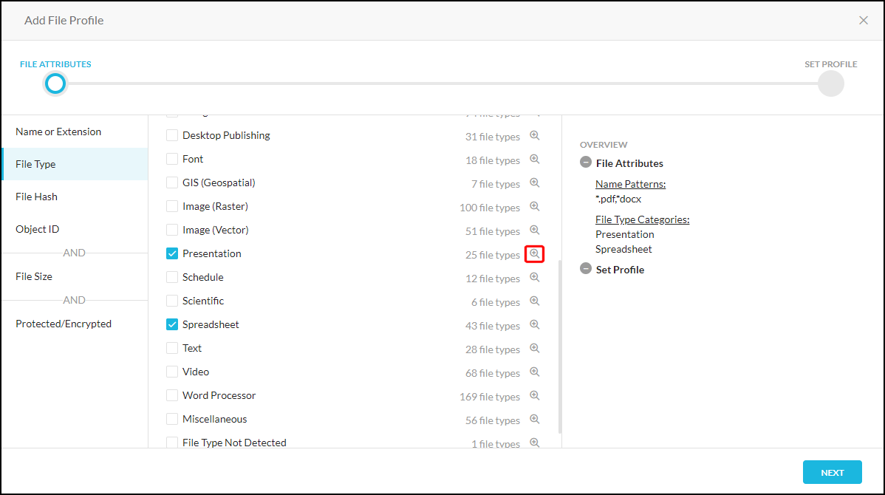

File Profile
Important
Contact Netskope Sales to enable this feature in your account.
The File profile can be used by DLP and Threat Protection to allow inclusion or exclusion of specific files based on different attributes of a file. The File profile attribute definitions include:
File name or extension
File type
File hash
Object ID
File Size
Protected/Encrypted
More than one attribute can be used in a single File profile. For example, a File profile with file type attributes and file hash attributes will scan for files have that file type or that file hash.
In addition to the four primary attributes, you can include file size factors and whether a file is password-protected or encrypted. For example, a File profile can scan for file type or file hash and file size and protected/encrypted attributes.
Tip
The attributes chosen are shown in the right panel of the Add File Profile dialog box.
After creating a File profile, use it in a DLP or Malware Detection profile to block or allow (DLP) and allowlist or blocklist (Malware Detection) certain actions for specific files based on defined attributes.
To create a File profile:
Go to Policies > Profiles > File, and then click New File Profile.
Select the file attribute(s) you want to use:
File Name or Extension: Enter file names and extensions in the text field, or upload a CSV file with this information. Up to two wildcard (*) characters can be used per entry in the text field and CSV files. To upload a CSV file, click Import from CSV and then click Add to List to upload the file. A CSV file can also be updated using the option Replace File.

File Type: Select a file type based on category, like Presentation or Spreadsheet.
Tip
Using the category for a file type, instead of specific file types, provides better coverage. Only select specific file types if you know exactly which files types to scan.
Note
For a list of all the supported file categories and file types, see Supported File Categories and File Types.
 To view and specify the file types in each category, click the
 icon for the category. All file types are selected by default within a chosen category. To define specific file types within a chosen category, click Select All to uncheck all options, and then check specific types. When finished, continue by clicking Categories or elsewhere in this dialog.
icon for the category. All file types are selected by default within a chosen category. To define specific file types within a chosen category, click Select All to uncheck all options, and then check specific types. When finished, continue by clicking Categories or elsewhere in this dialog.
File Hash: First select the file hash type(s) (SHA256 and/or MD5), and then enter file hash(es) in the text field, or upload a CSV file with this information. To upload a CSV file, click Import from CSV and then click Add to List to upload the file. A CSV file can also be updated using Replace File on the Import from CSV dropdown. The More dropdown option allows you to remove an MD5 or SHA256 file hash selection.

Object ID: Enter object IDs in the text field, or upload a CSV file with this information. To upload a CSV file, click Import from CSV and then click Add to List to upload the file.

File Size: Select an operator from the dropdown list, enter a size number, and then select a unit from the dropdown list. This attribute is an AND option with the primary attributes.

Protected/Encrypted: There are two options, Password-Protected and Encrypted. Password-Protected applies to zip, PDF, and Office document files. Encrypted applies to files protected/encrypted by Azure Information Protection (AIP) and Active Directory Rights Management Service (RMS). Check the option(s) you want to use.

Click Next, and then enter a name for the File Profile. Click Save.
Click Apply Changes.